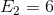
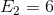
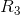
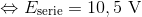

Subiectul II
Se realizează montajul a cărui schemă este redată în figura alăturată.

Se cunosc: 
 și  ,
și  , 
 ,
,  și
și  . Întrerupătorul
. Întrerupătorul  este închis. În aceste condiţii intensitatea curentului indicat de ampermetrul ideal (
este închis. În aceste condiţii intensitatea curentului indicat de ampermetrul ideal (  ) este
) este 
 .
.
- Determinaţi tensiunea la bornele generatorului având t.e.m.
 .
. - Determinaţi tensiunea la bornele rezistorului
 .
. - Calculaţi rezistenţa electrică a rezistorului .
- Se deschide întrerupătorul
 . Determinaţi valoarea pe care ar trebui să o aibă rezistenţa electrică a ampermetrului (
. Determinaţi valoarea pe care ar trebui să o aibă rezistenţa electrică a ampermetrului (  ), pentru ca intensitatea curentului măsurat de ampermetru, în aceste condiţii, să fie egală cu
), pentru ca intensitatea curentului măsurat de ampermetru, în aceste condiţii, să fie egală cu  .
.
Rezolvare:
- Avem


 .
.

Alegem un sens pozitiv de parcurgere al curentului electric şi scriem legea a doua a lui Kirchhoff:


 .
.
- Scriem prima lege a lui Kirchhoff:


 .
.
Scriem legea a doua a lui Kirchhoff şi alegem un sens pozitiv pentru sensul curentului:


 .
.
- Întrerupătorul se deschide, deci circuitul se rezumă la un circuit în serie, care are două surse legate în serie (dacă alegem un sens pozitiv de parcurgere al curentului, acesta va trece prin surse de la borna „
 ” la borna „
” la borna „ ” , deci tensiunile electromotoare ale lor se vor aduna).
” , deci tensiunile electromotoare ale lor se vor aduna).

.
Deoarece rezistenţele  şi
şi  sunt legate în serie, avem:
sunt legate în serie, avem:
 .
.
Scriem legea lui Ohm pentru întregul circuit şi avem:


 .
.